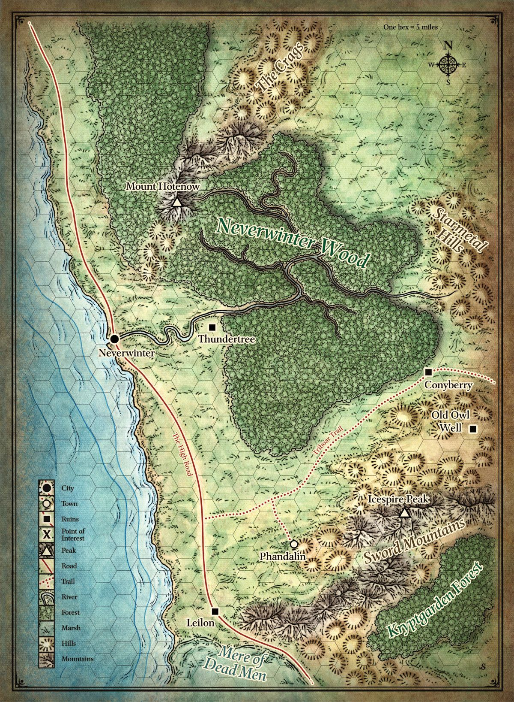

| home | campaign | characters |
| videos | R.I.P. | music |
CAMPAIGN |
|
More than five hundred years ago, in a region called the Sword Coast, clans of Dwarves and Gnomes made an agreement known as the Phandelver's Pact, by which they would share a rich mine in a wondrous cavern known as Wave Echo Cave. In addition to its mineral wealth, the mine contained great magical power as well. Human spellcasters allied themselves with the Dwarves and the Gnomes to channel and bind that energy into a great forge, called the Forge of Spells, where magic items could be crafted. Times were good, and the nearby Human town of Phandalin prospered as a result. But then disaster struck when Orcs swept through the North and laid waste to all in their path. A powerful force of Orcs, reinforced by evil mercenary wizards, attacked Wave Echo Cave, to seize its riches and magic treasures. Human wizards fought alongside their Dwarf and Gnome allies to defend the Forge of Spells, and the ensuing spell battle destroyed much of the cavern. Few survived the cave-ins and tremors, and the location of Wave Echo Cave was lost. For centuries since, rumors of buried riches have attracted treasure seekers and opportunists of all sorts to the area surrounding Phandalin, but no one has ever succeeded in locating the lost mine. In recent years, people have managed to resettle in the area. Phandalin, once a prosperous town, is now a small, rough-and-tumble frontier town. In the great city of Neverwinter, a Dwarf named Gundren Rockseeker has hired a group of people to bring a wagonload of provisions to Phandalin, which is only a couple of days' travel southeast of Neverwinter. Gundren was clearly excited and more than a little secretive about his reasons for the trip, saying only that he and his brothers had found "something big," and that he'd pay ten gold pieces for escorting his supplies safely to a place called Barthen's Provisions, a trading post in Phandalin. One by one, the group arrive at the agreed upon location, as they look to begin a journey they would not soon forget.... |
Map of the Sword Coast |
|

|